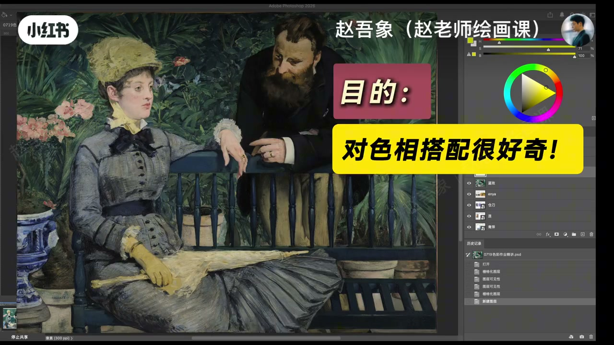
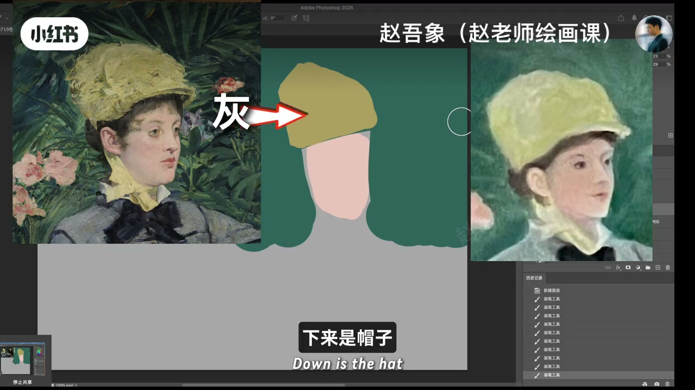
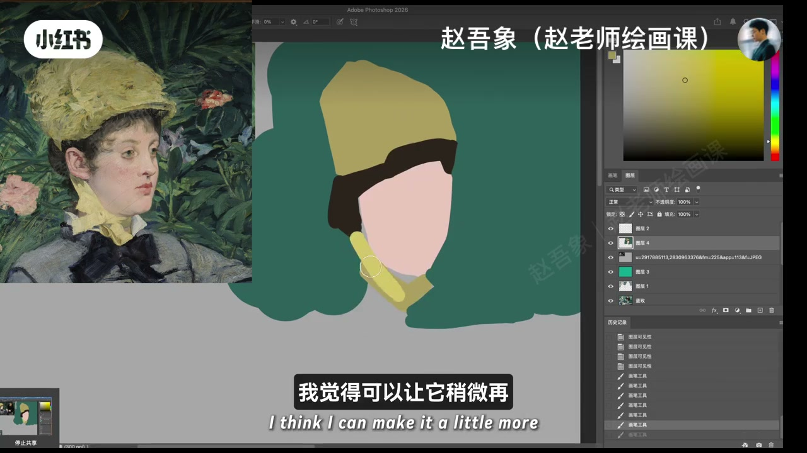
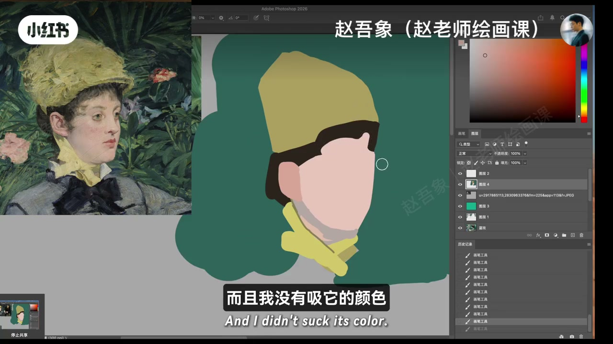
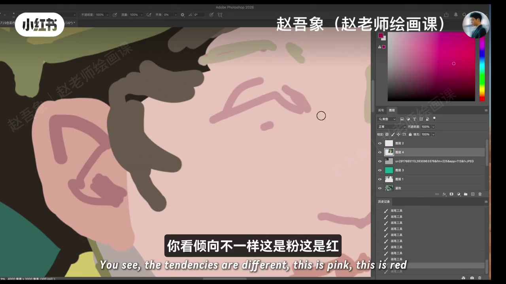

内容要点
赵吾象色彩作业精讲：无目的临摹看似完成一张画，对色彩能力帮助有限。应带着目的——好奇色相搭配或冷调情绪——去研究关系。示范临摹女人：形状可散乱，但脸最亮→帽→背景的明暗链要准；同类色丝带更亮且冷暖微偏。不吸大师颜色，用环境冷灰、互补发灰、固有色与反光把密码破译到自己画面上。
知识结构
带目的训练；形状可散关系准；同类色明度＋冷暖。
粉绿互补暗部灰；反光暖肤；倾向粉红绿棕各不同。
临摹大师是为研究并复刻色彩关系，不是扣形抄色；不吸色、靠理解，才能把背后的色彩密码变成自己的能力。
00:00-02:02带目的临摹：先关系后形状
开场追问：你画这张的目的是什么？没有想法的简单临摹，看似完成一幅完整画，对色彩能力帮助很有限。要带目的训练——例如觉得色相搭配好，或冷调呈现出独特情绪，都可以成为临摹目的。
示范临摹女人：几块颜色组成；形状很散乱、没扣细，但关系准确——脸最亮，其次帽子，再背景。学生稿帽子与肤色明暗常不如示范准。棕黄头发在局部最深；帽与颈上丝带同色相但丝带更亮，同类色还有冷暖倾向差，丝带可再冷一点（泛绿）。临摹大师要干嘛？研究色彩关系，不必想着把一幅画完成。00:16／00:41／01:10 可核。



02:02-04:38不吸色、破译密码：固有色与环境冷灰
点与丝带明度重复会糊在一起，需找脸上稍暗的色：整体环境冷灰泛绿，脸是粉，粉绿近互补，相加暗部发灰——直接用较灰色就能得到舒服的脸暗部。双下巴处有块泛暖肤色，来自丝带反光，纯度略高；到耳朵毛细血管多，固有色偏红。
整幅调子漂亮，是因为把大师的色彩关系复刻过来，全程没有吸色，靠理解达到结果。环境光泛冷则帽暗部发绿；局部暗色统一偏冷、往冷红走。头发太深会变成无倾向小黑块，要浅些并与肤色衔接。收束：每块颜色倾向不同——粉、红、绿、棕，同色相也有冷暖差。这就是色彩关系，临摹就要这样画。02:35／04:20 证据。


完整转录（158段）
以下文本由 Whisper medium 模型自动转录，可能存在少量识别误差，已尽可能修正。
你画这张画的目的是什么
如果没有想法的话
这样的简单的临摹
好像看似能够完成一幅完整的画
但实际上对你的色彩能力的帮助
是很有限的
你有没有带用目的的去训练
你比如说这幅画面
这个色相搭配你觉得是很好的
那你觉得这样一个冷调
呈现出一种独特的情绪
都可以成为你临摹的目的
假设我先给你们释放
假设我现在就想临摹
临摹这个女人吧
看一下这个女人
几块颜色组成的
你们发现我现在画这个东西
看上去我的形状是很散乱的
没有你们扣的那么细
但可是我的关系是准确的
脸是最亮的
下来是帽子
下来是这个背景
那看一下你帽子和肤色之间
是不是明暗关系
没有我那么准确
然后我们现在找一个棕黄色
这个头发可能在这个局部当中
是最深的一个色块
我这三个颜色
是不是很好看
这个帽子和
这个脖子上的丝带是一个色相
但是这个丝带更亮
这两个这同类色之间
它是有冷暖倾向的不同
所以我觉得底下这个好像
我觉得可以让它稍微再
再冷一点吧
冷就是泛绿
这就是色彩关系
我们临摹大师作品要干嘛
就是研究色彩关系
不要想着把一幅画完成
没有必要
然后现在有一个有趣的是
现在这个点和这个丝巾
丝带之间的明度是不是重复了
就是两者糊在一起了
我们现在需要找一个脸上的
一个稍微暗一点的颜色
这里就可以用色相片翼来
推断一下脸上的暗色
整体的环境是一个冷灰
而且是泛绿的颜色
那这个东西这个脸是粉
粉和绿几乎接近于是一个互补的关系
所以两者颜色相加以后
这个脸的暗部会发灰
直接用一个比较灰的颜色
其实就能得到这个脸的暗部
就会很舒服
大家说是不是
然后这里还有一个有趣的地方
他的脖子这个应该是双下巴这个位置
他有一块很漂亮的
有点泛暖的一个肤色
这是哪里来的
这就是因为这个丝带的反光
这是肤色是吧
然后他泛黄嘛
纯度高一点
这个颜色其实就对了
到耳朵的地方
因为这地方毛细血管比较多
所以这地方固有色是偏红一点的
你看我现在画的这个画面
整个画面这个调的非常漂亮
我没有抄大师的色彩
我是把他的色彩关系给他
复刻到了我的画面上
而且我没有吸他的颜色
大家应该全程都看到了
我完全没有吸他的颜色
这就是我靠理解
达到了一个结果
大家就要做这样的练习
非常有趣
而且你真的可以通过这个练习
让你的水平突飞猛进
这个帽子他还有一个稍微怎么样
暗一点的颜色
这个首先这个画面的光线
他是环境光泛冷是吧
我们得到了这个帽子的暗部
是发绿的一个效果
这样这个是正确的
大家现在能理解吗
所以我做这件事
直接这个色彩的本质
来去黎摹一幅画
等于把大师色彩后面那些
背后的密码给他破译出来了
你这样做就特别有趣
然后这些局部的
就是固有色已经有了
然后局部的暗色就统一都偏冷
因为他整个的环境是偏冷
往这个冷红去走
然后暗一点
你就能得到你看
耳朵的暗部的色彩
是不是
这个颜色就很漂亮
然后同样这个眼睛
我们给他稍微浅一点
眉毛也是
他是发黄的一个感觉
所以你看马来这幅画
他的色调是非常漂亮的
你们现在有这感觉了吗
色调真的很好看
嘴的红色是泛暖的感觉
而且纯度会高一些
现在感受怎么样
大家有这个感觉了吗
这个就是色彩关系的问题
现在我发现一个小小的问题
是什么
这个头发好像
在我的画面当中有点太深了
我感觉他好像像一个小黑块的一样
你就没有色彩倾向了
要浅一些的
和肤色相衔接的地方
给他画的稍微自然一些
这就是色彩关系
看到了没有
我的每一块颜色
实际上都不一样的
这是一个你看
倾向不一样
这是粉这是红
这是绿这是棕
当然这两个颜色是一样的
是不是
但是这两个颜色是不一样
这是偏暖
这是偏冷
是不是
这是偏冷发绿
这是偏暖发黄
多有趣
这就是色彩关系
同学们
这就是黎摩大师作品
你就要这样去画